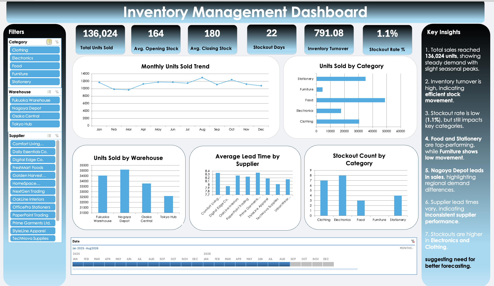
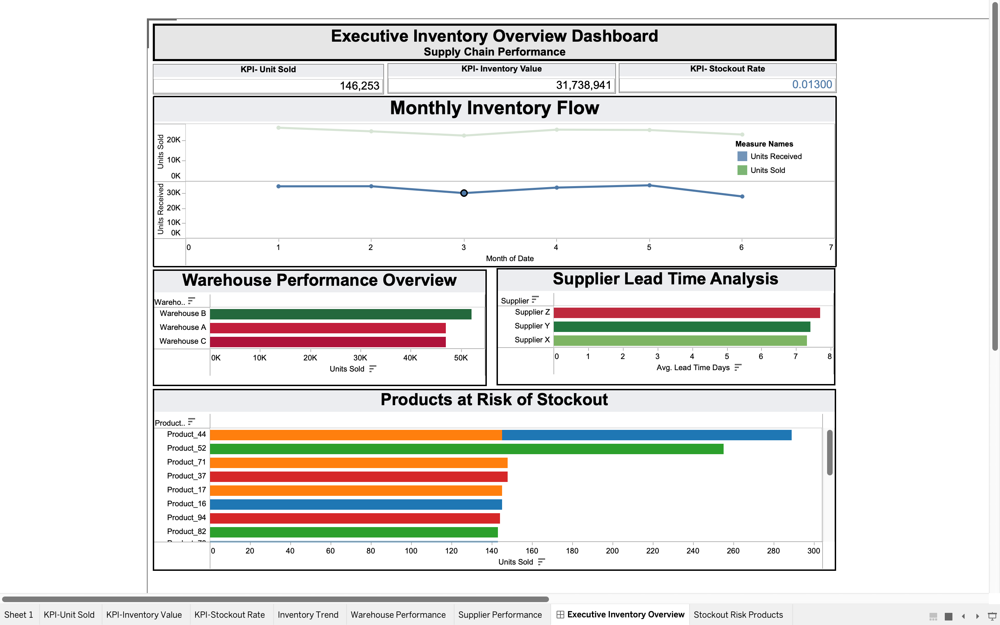

Created an interactive Inventory dashboard using Microsoft Excel.
View Project View on GitHub
Created an interactive dashboard using Microsoft Excel.
View Project View on GitHub
Designed an interactive Tableau dashboard to analyze inventory performance, warehouse efficiency, and supplier lead times. The dashboard provides executive-level insights into stock flow, stockout risks, and operational bottlenecks using KPI-driven visualization and dynamic filtering..
View Project